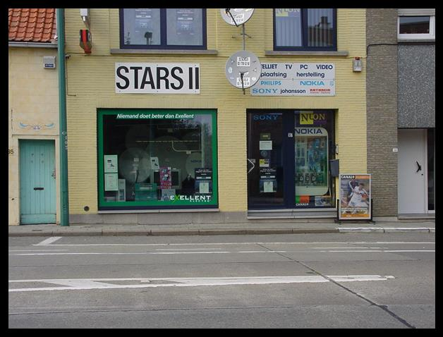

Welkom bij S.T.A.R.S.II
STARSII is een elektrozaak opgericht in 1992 en gevestigd te Kortenberg, sinds 2006 hebben we een eigen winkel en ondertussen een ruime ervaring opgedaan in ons vak. De zaak is gespecialiseerd in de verkoop en installatie van satellietantennen met een diversiteit aan ondersteuning. S.T.A.R.S.II staat voor: Satellite and Terrestrial Antenna Receiver Systems
